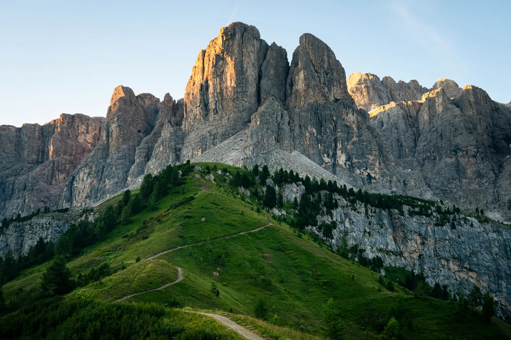
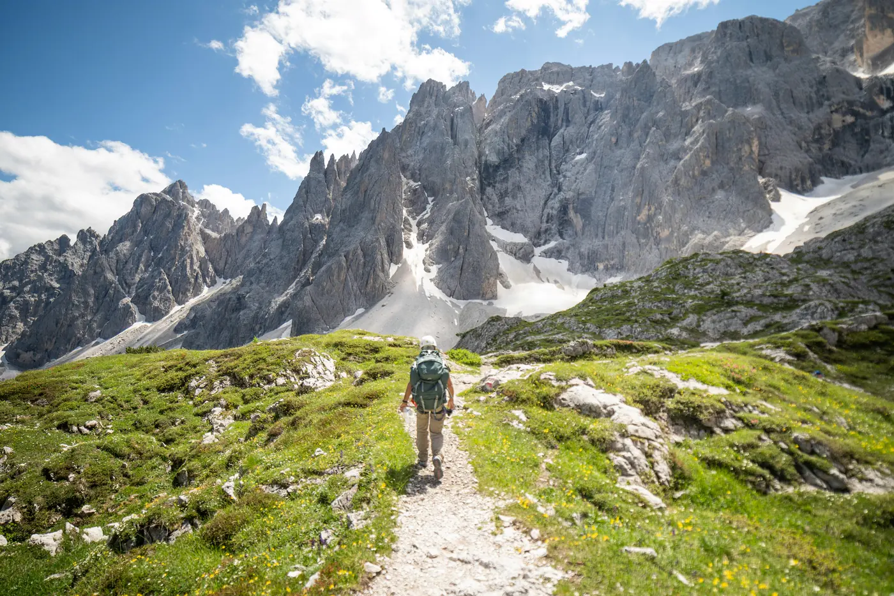
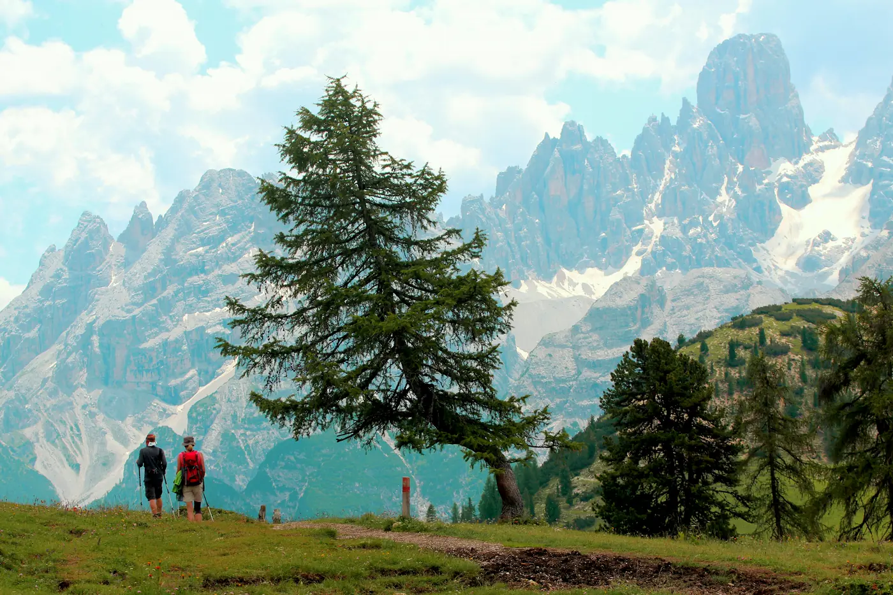
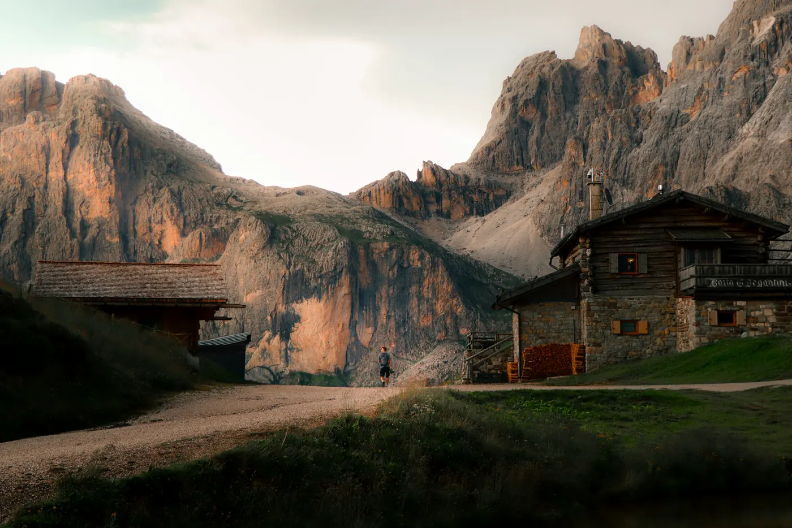

Alta Via 1, in fourteen days.
Lago di Braies to Belluno, about 120 km, hut to hut. The guidebooks give it ten days. We give it four more and spend them where the light is worth a second morning.
North to south, high to low.
Alta Via 1 is the gentlest of the Dolomite high routes and the one with the best huts. It starts at a lake at 1,496 m and ends in a town at 390 m, and in between it climbs to 2,752 m at Rifugio Lagazuoi and crosses under the Civetta's north-west face, which is the biggest wall in the range and worth a whole afternoon of sitting still.
No via ferrata, no glacier. One day with cable-protected ledges that we take slowly, and one optional summit, Nuvolau, for anyone who wants to be at 2,575 m when the sun comes up.
- Distance
- 120 kmfrom Lago di Braies to Belluno, with our detours
- High point
- 2,752 mRifugio Lagazuoi, day four
- Nights
- 13eleven in rifugi, two in a valley hotel
- Price
- €4,900per person, all meals and beds, from Dobbiaco station to Belluno station
Scroll to walk it.
Day 1, Lago di Braies, 1,496 metres.
Five legs, fourteen days.
Altitudes are the huts' own. Walking times are ours, which run long.
Braies to the Fanes plateau
A short first day on purpose. We walk out of the lake's shadow at half past six, climb to Rifugio Biella for the night, and spend day two crossing the Fanes, a limestone plateau that holds the last light for an hour longer than the valleys. Day three is for the lakes.
- Day 1Lago di Braies to Rifugio Biella1,496 → 2,327 m
- Day 2Biella across the Fanes to Rifugio Lavarella2,327 → 2,042 m
- Day 3The Fanes lakes, back to Lavarellarest day, light pack
Lagazuoi and the Cinque Torri
The high point of the whole route on day four. Rifugio Lagazuoi at 2,752 m has a terrace that faces the Tofane and a breakfast that starts at five if you ask the night before. Day six finishes on Nuvolau, a hut on a summit, for the morning after.
- Day 4Lavarella to Rifugio Lagazuoi2,042 → 2,752 m
- Day 5The Lagazuoi galleries, down to the Cinque Torri2,752 → 2,137 m
- Day 6Cinque Torri to Rifugio Nuvolau2,137 → 2,575 m

Giau, Pelmo, Coldai
Down from Nuvolau at first light, across Passo Giau while the road is still empty, and round the foot of the Pelmo, which looks like a throne from every side and is called one. Day nine ends at Rifugio Coldai with the Civetta's north-west face filling the window.
- Day 7Nuvolau to Passo Giau and Rifugio Città di Fiume2,575 → 1,917 m
- Day 8Round the Pelmo to Passo Staulanza1,917 → 1,766 m
- Day 9Staulanza to Rifugio Coldai1,766 → 2,132 m

Under the Civetta, into the Moiazza
The Civetta traverse is the day most people remember. Rifugio Tissi sits on a shelf at 2,250 m directly under the face, and the evening there is the reason this route has fourteen days and not ten. Then a long descent through the Moiazza to Pian de Fontana, the last high hut.
- Day 10Coldai under the Civetta to Rifugio Tissi2,132 → 2,250 m
- Day 11Tissi to Rifugio Carestiato through the Moiazza2,250 → 1,834 m
- Day 12Carestiato to Rifugio Pian de Fontana1,834 → 1,632 m

The Schiara, and down to Belluno
Two days through the Schiara, the quietest group on the route, by the ledges below the Forcella Marmol. The last morning starts in the dark and ends in a piazza with coffee. Belluno station is twenty minutes' walk from the last gate; the train to Venice takes two hours.
- Day 13Pian de Fontana to Rifugio Bianchet1,632 → 1,245 m
- Day 14Bianchet to Belluno1,245 → 390 m
Three Sundays.
Each departure meets at Dobbiaco station on the Sunday afternoon and ends at Belluno station fourteen days later. Eight places, two guides, and the same two guides for the whole fortnight.
- 14 Juneto 27 June2 places
- 5 Julyto 18 July3 places
- 30 Augustto 12 SeptemberFull · waiting list
€4,900per person. Every bed and every meal from Dobbiaco to Belluno, the transfers between, and both guides. Flights and insurance are yours.
Ask about a place